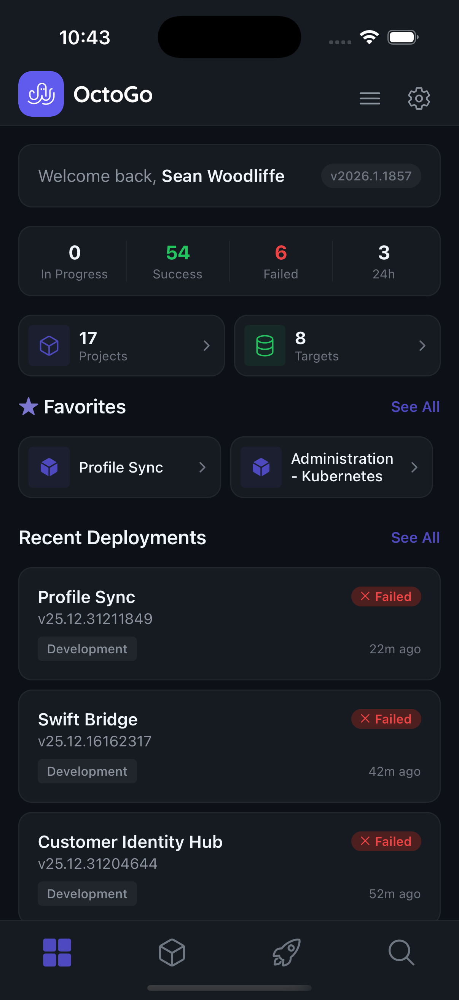
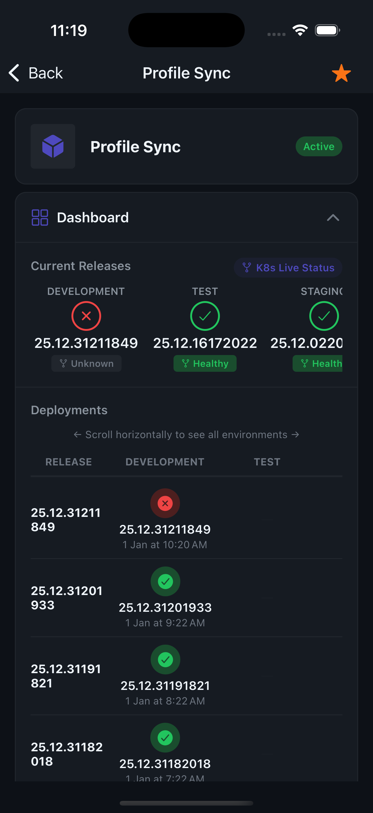
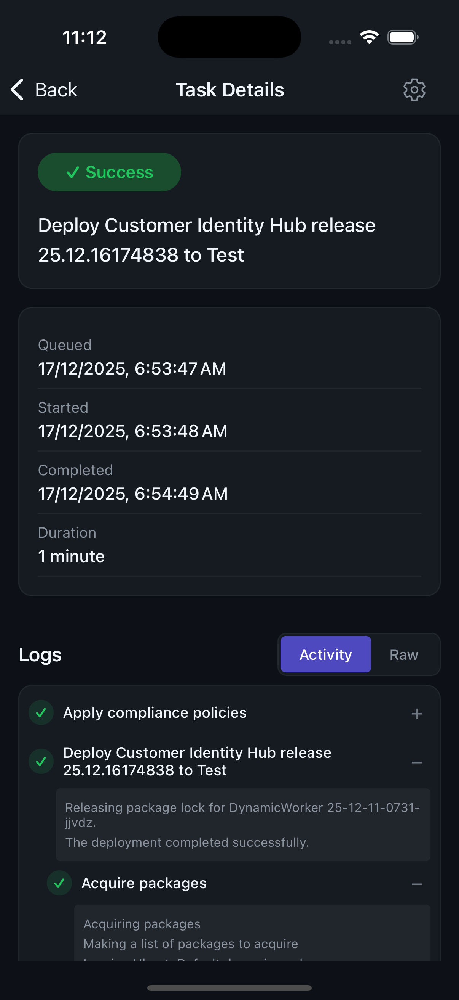
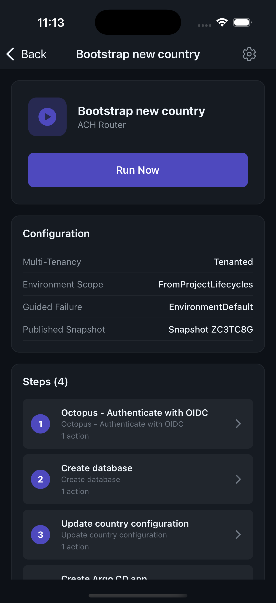
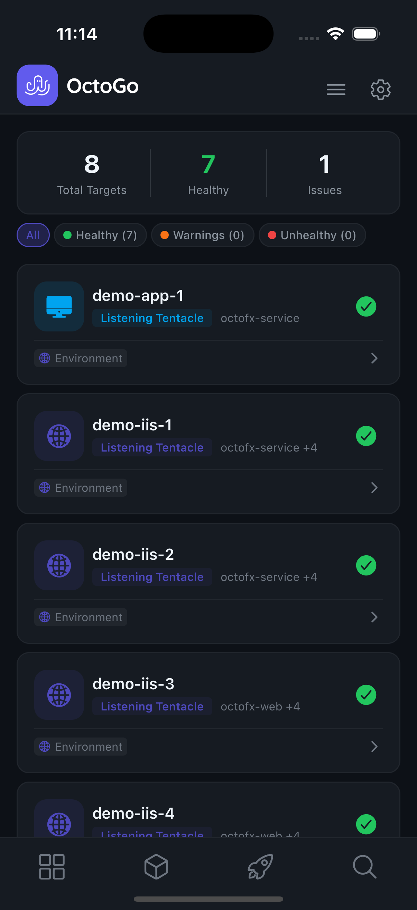

Deployments & releases
Watch tasks run with live logs. Promote a release to the next environment from wherever you happen to be standing.
OctoGo · a native client for Octopus Deploy
OctoGo puts your Octopus Deploy instance on your phone. Watch deployments land, kick off runbooks, and check on your infrastructure — without opening a laptop.

Watch tasks run with live logs. Promote a release to the next environment from wherever you happen to be standing.
Restart the service from the couch. Prompted variables, environment pickers, and task output — the whole run, not a shortcut.
Every deployment target, its health, and what's on it. Spot the unhealthy machine before the pager does.
Deployment frequency, success rate, and duration trends per project. Know whether Tuesday was normal.
Multiple instances, multiple spaces, one app. Switch context in two taps and keep favourites per space.
A real native app — quick to open, easy on data, dark by default, with Face ID standing between the world and your API keys.




The app talks straight to your Octopus instance over HTTPS. There is no OctoGo backend, relay, or proxy in the middle.
API keys live in the iOS Keychain or Android Keystore, optionally behind Face ID or fingerprint. They never leave your phone.
No analytics SDKs, no trackers, no usage data. What you deploy is your business. Read the privacy policy →
The entire app is on GitHub. Audit the code that handles your API keys — or improve it. View the source →
Free to download. Bring your own Octopus Deploy instance. View the source on GitHub →